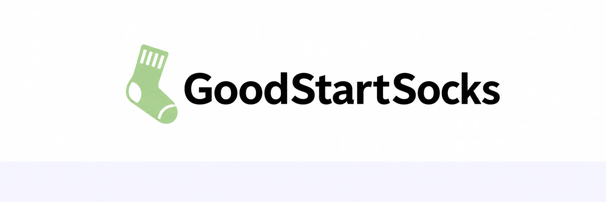
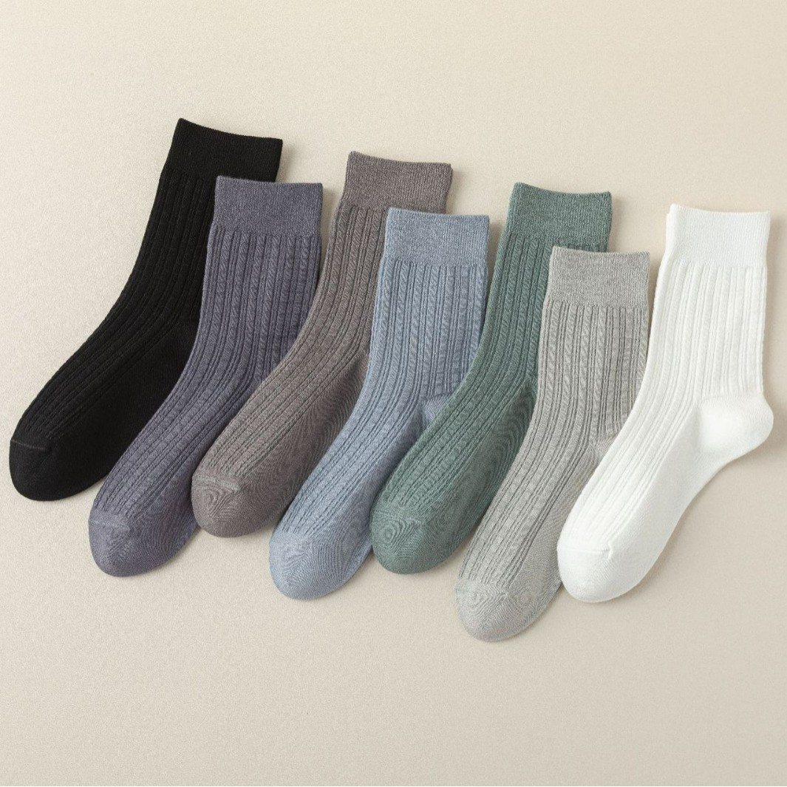
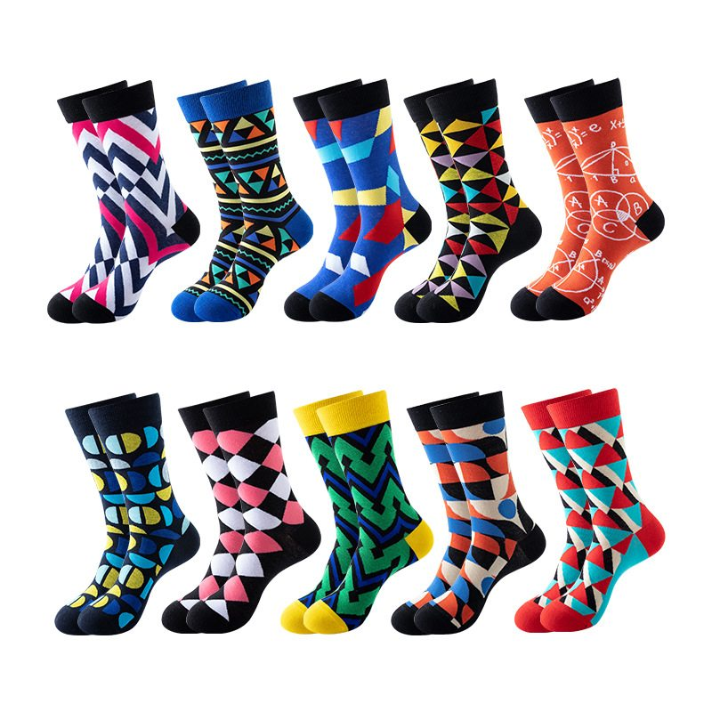
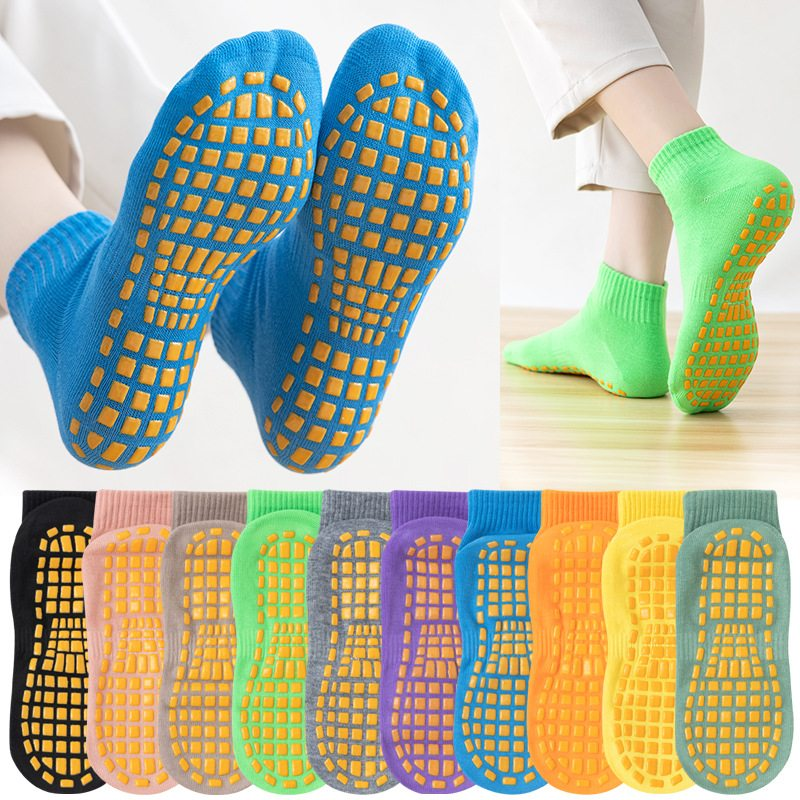
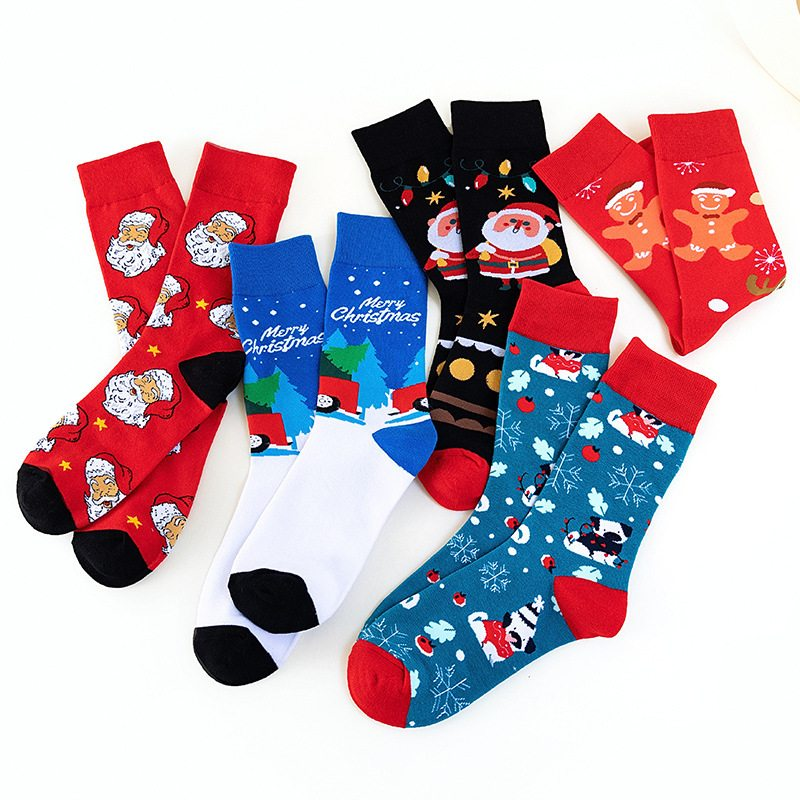
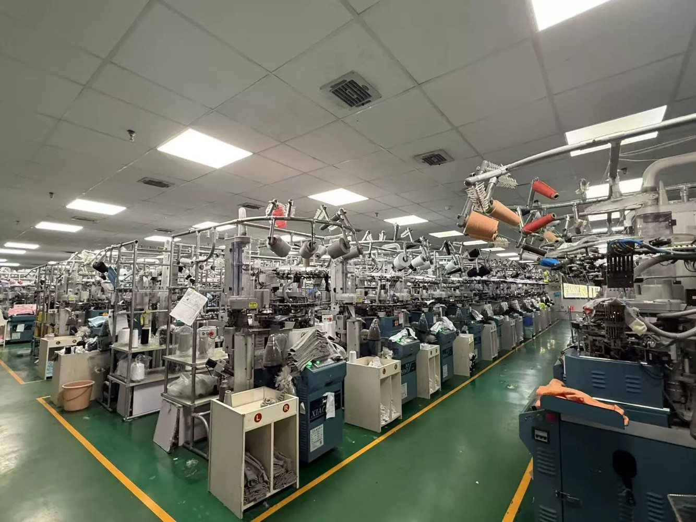
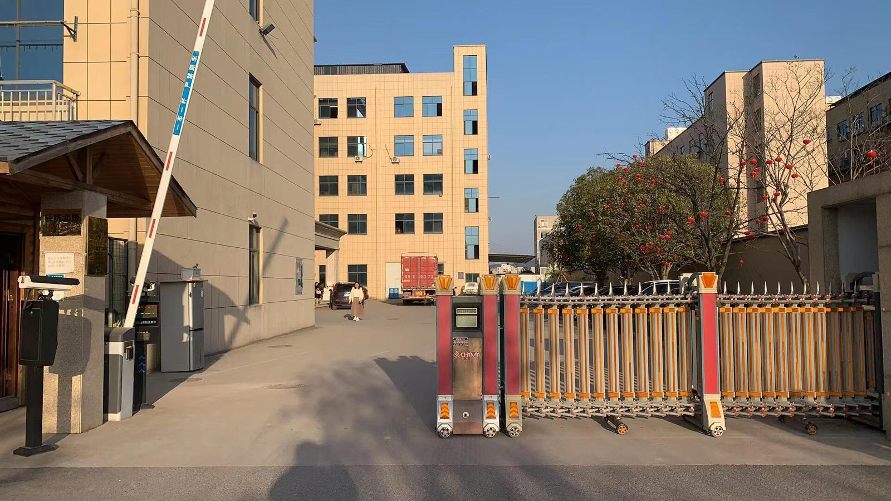
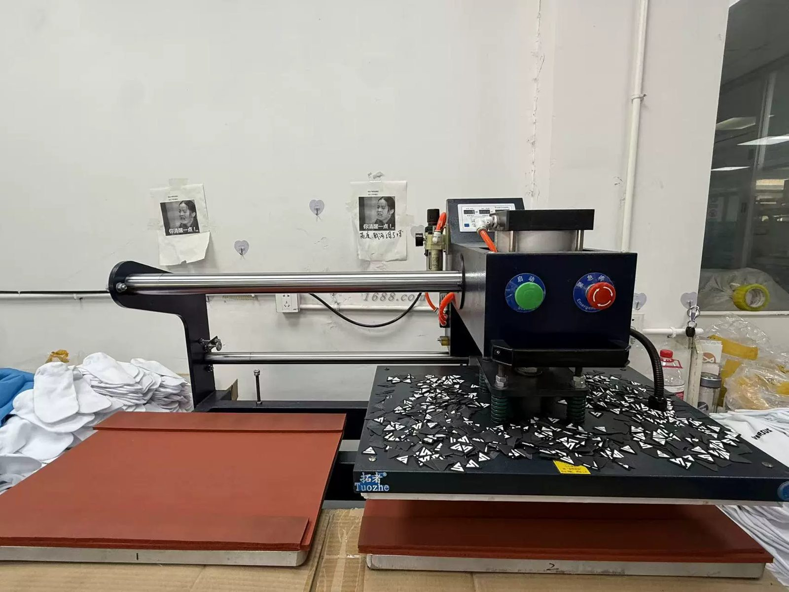

Factory Direct
Clear communication from sampling through bulk production.

Get a QuoteWe help buyers turn designs into production-ready socks. Choose the style, yarn, colors, logo technique, size and packaging — then we handle sampling, manufacturing, inspection and shipment coordination.
Clear communication from sampling through bulk production.
Materials, patterns, logos, sizing, labels and retail packaging.
Practical quantities for growing brands and repeat programs.
Production details checked against your approved sample.

Team, running, training and performance styles.

Knee-high performance and compression styles.

Custom grip patterns for yoga, Pilates and studio use.

Custom colors, patterns, labels and retail packaging.
Start with your artwork or even a rough idea. We can help organize the production details before sampling.
Explore Custom Options →Your custom socks, from idea to delivery
Choose your sock style, sizes and quantity. Minimum order: 500 pairs.
Send your artwork, logo and color preferences. We help plan the details.
Review your design and sample before production. Samples: 3–7 days.
After sample approval, we produce, inspect and pack your order. Bulk production: about 30 days.
Collections with consistent sizing, colors and packaging.
Team identity, fit, performance yarn and grip options.
Branded socks for staff, customers and events.
GoodStartSocks operates approximately 50 knitting machines and supports custom B2B sock programs from sampling to bulk production.



Our standard starting MOQ is 500 pairs. The final MOQ can depend on sock type, yarn, logo technique, size breakdown and packaging.
Yes. Sampling helps confirm material feel, size, colors, logo placement and construction before bulk production.
Sock height, materials, colors, patterns, logos, size range, labels, bands, hang tags, bags and boxes can all be discussed.
Send your logo or artwork, expected quantity, sock type, size range, preferred material, packaging idea and target delivery date.
Send your design and order details. Contact Lilly by email or WhatsApp for sampling, pricing and production questions.
Email: lillyyutang@gmail.com
WhatsApp: +1 526 257 9178